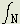

THE THEORY OF GRAVITATION
Copyright © Harold Aspden, 1960, 1998
This is a reproduction of the text of a booklet written by the author in 1959, published early in 1960. In the light of his 1998 perspective, some 38 years on from that 1960 effort, the author has added several notes bearing the symbol  . These may interest science historians who, hopefully, one day will seek to track how the author's theory developed over time.
. These may interest science historians who, hopefully, one day will seek to track how the author's theory developed over time.
PREFACE
This work presents a theory of gravitation which will either come to be accepted as a correct account of the nature of gravitational phenomena or, failing that, will stand as a record of perhaps the greatest of all coincidences in physical theory because the theory relates, by a common simple factor, six basic phenomena in physics and further provides exact quantitative support in each case.
The theory presents a challenge to the General Theory of Relativity and, if accepted, should release the physicist from further need to apply himself to understanding the very complex General Theory of Relativity and thereby enable him to divert his efforts to more fruitful fields of research. This is perhaps a more important consequence of this work than the satisfaction of man's natural curiosity to understand the nature of gravitational force.
This privately published work is little more than a collection of the author's abridged notes, but if the reader has the interest to grasp the basic notions presented and judge these in the light of all the results they yield, he will undoubtedly share the author's enthusiasm.
Harold Aspden
22nd November, 1959.
CONTENTS
1 INTRODUCTION
2 THE AETHER
3 THE PHOTON
4 THE FORCE OF GRAVITY
5 THE GEOMAGNETIC FIELD
6 THE PERIHELION MOTION OF THE PLANETS
7 THE UNIVERSAL CONSTANCY OF GRAVITY
8 THE GRAVITATIONAL DEFLECTION OF LIGHT
9 THE GYROMAGNETIC RATIO
10 REFERENCES
INTRODUCTORY NOTE
Although modern physical theory, which consists essentially of Quantum Mechanical and Relativistic notions, ostensibly precludes further creative thought on classical lines, it is nevertheless built up around a series of natural laws developed solely by the classical method. To deny scope for further thinking along classical lines is to accept that the set of natural laws existing 30 years ago, when these modern theories became established, is complete.
This work is founded upon the conviction that the classical method was not a spent force 30 years ago, and that it can produce further data which will provide new starting points for advances in theoretical physics. One fruit of this conviction is the derivation of a valid relationship between the Universal Constant of Gravitation and the fundamental atomic constants, and incidental to the derivation of this relationship is the understanding of the very nature of the force of gravity, Newton's Law of Gravity and, indeed, the minor inadequacy of Newton's Law in explaining the perihelion motions of the planets.
�
I
INTRODUCTION
Preliminary Note
Quantum Mechanical Theory and the Theory of Relativity each overcome a fundamental difficulty facing classical theory. The problem of the negative result of the Michelson-Morley Experiment is met by Relativity and the quantization problem of the Bohr atom is met by Quantum Mechanics. By their premises these theories avoid the need to provide a physical account for these two problems, and in consequence the theories miss the benefits which such a physical account may confer. These modern theories have left a vast field of theoretical physics wide open for exploration by the classical method and, as will be shown, the explanation of gravitation lies in this field.
The Michelson-Morley Problem
The result of the Michelson-Morley Experiment did not disprove the existence of an aether. A positive result would have confirmed the prevailing notions of a simple universal, homogeneous aether. The negative result provided definite proof that the earth has an aether of its own, a medium which moves with the earth through some surrounding medium. As Campbell [1] puts it:
"If we speak of 'aethers' and not 'the aether' all our experiments prove is that the particular aether with which we are concerned in any case is that which is at rest relatively to the source and may be regarded as forming part of it. This is the simple way out of the difficulties raised by the Michelson Morley experiment. If from the beginning we had used a plural instead of a singular word to denote the (aether) system ... those difficulties would never have appeared. There has never been a better example of the danger of being deceived by an arbitrary choice of terminology. However, physicists, not recognizing the gratuitous assumptions made in the use of the words 'the aether', adopted the second alternative; they introduced new assumptions."
In 1929 Veronnet [2] suggested that the aether was permeated with electrically charged particles having a magnetic moment equal to the Bohr Magneton. This conception can be applied to the understanding of the quantization problem of the Bohr atom and goes a step in advance of the premises of Quantum Mechanics because it affords a physical picture of a space filled with charged particles moving harmoniously in equal circular orbits. In addition to this orbital motion of each particle an extensive matrix of particles can itself rotate. Thus, the earth may well be regarded as having its own matrix of particles rotating with the earth about the carth's axis of rotation. As this matrix would be the frame of reference for physical measurements on earth no motion of the earth can be detected without reference to something outside this matrix. Also, the earth's aether particle matrix may evidently move freely through surrounding aether, which it can do if the forward boundaries of the aether matrices of the earth and its surroundings can break up and transmit the freed particles to the rearward boundaries where the matrix is being reformed.
This hypothetical picture readily lends itself to a remarkable quantitative explanation of the principal outstanding fundamental physical phenomena.
The Perihelion Motions of Planetary Orbits
The explanation of these motions provides the greatest support for the General Theory of Relativity, but the aether just envisaged provides a simple alternative explanation. The motion of a planet in its orbit is accompanied by a reverse motion of the freed particles. If the orbit is elliptical and the orbital velocity of the planet accordingly varies, the number of free aether particles in the planet's local aether will vary and will be balanced by a fluctuation of the number of bound aether particles forming the local aether matrix. Indirectly, as the aether has mass properties, this gives rise to a variable component of angular momentum which has an effect on the planet's motion. Exact calculation of the effects is possible, and the results establish that the hypothetical aether picture involved is essentially valid.
The Features of a Veronnet-type Aether
The harmonious rotation of a number of identical electrical particles in identical orbits defines, in conjunction with a consideration of electrostatic force action between the particles:
(1) a system in which all the particles are at any instant moving parallel to one another,
(2) a system having a fundamental rotation frequency which is fixed through all space,
(3) a system of particles having a common direction for their rotation axes, and
(4) a system of particles having quantized momenta.
Gravity
The basic explanation of gravitational force stems immediately from the fact that at every instant the electrical particles in the aether move in parallel directions.
The electromagnetic force of attraction between two electrical particles in motion has never been measured. Such forces have been measured only between current systems of which one current flows in a completely closed circuit and the formulation of a general law of force between two current elements has only been required to conform with experimental observation. The simple law is well known but there is a complex law which, although it represents a correct and full interpretation of the experimental data available on the subject, has not come into general or even specialized use because all practical applications involve closed current circuits and the more simple law suffices. The complex law is required to understand the mechanism of gravity.
The original formula of Ampere has been modified by Whittaker [3], who has shown that one of the most simple forms of the general formula is:
F = (ii'/r3)[(ds'.r)ds - (ds.r)ds' - (ds.ds')r] ......... (1)
where F denotes the force acting on a current element ds' due to a current element ds, r is the line from ds to ds', and i and i' denote their respective current strengths.
Evidently, for parallel current elements, with ds equal to ds' the force acting between the elements is an attractive force acting directly between them, proportional to the product of their strengths, and inversely proportional to the square of the distance between them. This will yield a qualitative account of gravitation which may be tested by deducing the value of the Universal Constant of Gravitation once an association between a current element and mass has been recognized.
Geomagnetism
Geomagnetism arises from the rotation of the matrix of aether particles forming the earth's local aether. The effect of this is to expand or contract the matrix to upset the normal aether balance. The electrical effects of this distortion of the aether matrix cannot be detected because the freed particles in the aether matrix which have the constrained counter motion in the earth's orbit will position themselves to provide a compensating non-rotating charge effect. Nevertheless, the magnetic effect of the rotating electrical charge will manifest itself. It will be shown that this self-induction property of the aether by which a matrix of aether particles in rotation produces a magnetic field will provide an excellent quantitative account for the source of the geomagnetic field.
Dirac's Continuum
The conception of holes in a continuum is envisaged in the implied aether of Dirac's work in Quantum Mechanics [4], and the aether model of Veronnet can represent this if it consists of a myriad of identical particles in motion in Dirac's 'sea of opposite charge'.
This continuum of opposite charge balances the electrical effects of the aether particles. Mass disturbs the aether by selectively affecting electrically compensating charges to produce an unbalanced magnetic effect owing to a difference in their velocities, a magnetic effect which, for reasons which will become apparent in the following chapters, cannot be detected as such in present experimental work.
�
Readers who may have studied PHYSICS LECTURE NO. 2 will see that by 1980 I had discovered a different way of explaining the anomalous perihelion motion of the planets. However, there is something quite relevant and fascinating in the fact that my researches gave me two explanations for the same phenomenon. When one comes to study the relevant Chapter 6 of this 1960 booklet on The Theory of Gravitation it is seen that I had to introduce the bounding radius of the earth's aether as a parameter in the analysis. I now (1998) believe that the 1980 version as published by the U.K. Institute of Physics 1980b is the governing formulation, but that the 1960 version provides the explanation of what it is that determines the position of the boundary as between aether rotating with the planet and the enveloping aether which does not share the planet's rotation. This will be discussed in my notes as added to Chapter 6.
2
THE AETHER
Preliminary Note
The aether is regarded as consisting of particles of electrostatic charge e distributed throughout a continuum of opposite charge of uniform charge density a per unit volume. In this system the particles will, by mutual electrostatic repulsion, arrange themselves in a simple cubic lattice-like array to form a matrix whose inter-particle spacing (to be denoted d) is determined by the charge density of the continuum. Thus:
e =  d3 ............(2)
The aether cannot be at rest; it must convey the notion of time and must therefore have some motion. Electrical particles in motion set up magnetic influences and, as equation (i) is taken as fundamental, it must apply to the particles in the aether. This introduces a point which in itself is sufficient to justify the recognition of the aether model presented without recourse to the extensive support which follows. Equation (1) is typical of many capable of satisfying the experimental evidence, but it is the only possible equation capable of being fully consistent with Newton's Third Law for any value of r. Compare the equation with Whittaker's equation:
d3 ............(2)
The aether cannot be at rest; it must convey the notion of time and must therefore have some motion. Electrical particles in motion set up magnetic influences and, as equation (i) is taken as fundamental, it must apply to the particles in the aether. This introduces a point which in itself is sufficient to justify the recognition of the aether model presented without recourse to the extensive support which follows. Equation (1) is typical of many capable of satisfying the experimental evidence, but it is the only possible equation capable of being fully consistent with Newton's Third Law for any value of r. Compare the equation with Whittaker's equation:
F = (ii'/r3)[(ds.r)ds' + (ds'.r)ds - (ds.ds')r] ......... (3)
Experimental evidence is consistent with the first term having any numerical coefficient. However, although this equation (3) ensures that there is no out-of-balance of the forces acting between the two current elements there is nevertheless an out-of-balance couple in the general case. This may be compared with equation (1), which is formulated to ensure that there is no out-of-balance couple though there may be an out-of-balance force. Newton's Third Law demands that force and couple balance are essential in a complete system. However, if the aether is present this may become a party to the system, and it is then useless to draw distinctions between equations such as (1) and (3) which both suffice to satisfy observation.
Consider now the aether particles. These are current elements, and they actually form the aether; when applied to these particles the magnetic force equation applies to a complete system. Equation (3) is inapplicable because it does not guarantee an elimination of the couples between the particles. Equation (1) ensures that the couples are eliminated, but there is only force balance for one condition; the motions of the particles must be parallel. Evidently, as Action and Reaction must always be equal and opposite for any complete system, charged particles forming the aether cannot move unless their motions are parallel.
An Analysis of the Structure of Undistorted Aether
The obvious conditions satisfied by the aether are:
(1) It is mechanically balanced.
(2) It is electrically balanced.
(3) It is magnetically balanced.
Also, as in any electrical system, there is the condition that:
(4) The electrostatic energy of the aether tends
to a minimum value.
The electrostatic energy of the aether can be written :
 .....(4)
.....(4)
The factors 2 in the denominators are introduced because each interaction is counted twice in the summation or integration. In these expressions the summations apply to all the aether particles in an infinitely-extending cubic array, the integrals extend over the whole volume V of the aether, x denotes the distance between the element charges and  denotes the intrinsic electrostatic energy of a particle. The interparticle lattice distance d is taken to be unity for this analysis.
denotes the intrinsic electrostatic energy of a particle. The interparticle lattice distance d is taken to be unity for this analysis.
Let:
m denote the aether particle mass,
 denote the continuum mass density,
denote the continuum mass density,
v denote the aether particle velocity,
u denote the continuum velocity,
r denote the radius of the particle orbit, and
R denote the radius of the continuum orbit.
The first three conditions just enumerated can then be formulated as follows:
(1) Mechanical balance
 mv =
mv =  udV .....(5)
udV .....(5)
v/r = u/R .....(6)
(2) Electrical balance
e = dV .....(7)
(3) Magnetic balance
evr = uRdV .....(8)
From (7) and (8) it is evident that vr=uR, and from (6) and this result it is further evident that v=u and r=R. Equation (5) then shows that m is equal to dV. The relative velocity between the particles and the continuum is therefore 2v.
When the aether is disturbed and the disturbance is propagated relative to the aether particle system or the continuum this velocity 2v will equal the propagation velocity c. Hence v is equal to c/2.
This latter statement needs some justification and this was presented in the 1966 second edition of this Theory of Gravitation text as well as in the author's later works Physics without Einstein (1969) and Physics Unified (1980). The essential point is that the relative velocity between the system of aether particles and the medium constituting the background continuum is assumed to be the speed of light. The consequences of this assumption are the test of this, but one can appeal to logic and take note that the vacuum medium has somehow to have a property which determines the speed at which light propagates through it and, given that its components have a relative motion that has a universal value, it seems logical to take that as the speed of light.
It is noted here that the author, in reproducing this web page presentation, has retained the mathematical symbols as used in the original printed work. However, since such symbols are not, as yet, standard media features in Internet communication, this has been done by use of images which do not fit well together. This seems a better option than using a style of presentation which writes 'pi' for  .
.
Next, consider condition (4). The electrostatic energy tends to a minimum. by differentiating equation (4) with respect to and equating to zero it is found that:
(e/x)dV = (2/x)dVdV .....(9):
From equations (40 and (9):
Es = (e2/2x) - (e/2x)dV + .....(10)
Examination of (10) shows that the energy Es is only finite per particle, as it must be, if:
(e2/x) = (e/x)dV ......(11)
and this agrees with the requirement that Es tends to a minimum which is simply:
Es = .....(12)
Evaluation of Aether Particle Mass
The condition demanded by (11) is only satisfied if the particle matrix is displaced in the continuum from its electrostatically-neutral position. the restoring force opposing such a displacement is 4e times the displacement. The displacement is clrealy r+R or 2r, and there is balance between the electrostatic force and the centrifugal force when:
m(c/2)2/r = 8er .....(13)
From this:
mc2 = 32er2 .....(14)
The displacement gives rise to an electrostatic energy component 8er2, and this enables equation (11) to be written in the form:

(e/x)dV - (e2/x) = er2 ......(15)
where the suffix N indicates that the expression is evaluated assuming that the particle system is in an electrostatically-neutral position in the continuum (the rest position).
The Evaluation of (e/x)dV - (e2/x)
This evaluation may proceed in three stages:
Stage 1: The evaluation of (e2/x) between one particle and the other particles.
Regarding d as a unit distance, the co-ordinates of all surrounding particles are given by l, m, n, where l, m, n may have any values in the series 0, +/-1, +/-2, +/-3, .... but the co-ordinate 0,0,0 must be excluded. Consider successive concentric cubic cells of surrounding particles.
The first shell has 33-1 particles, the second 53-33, the third 73-53, etc. Any shell is formed by a combination of particles such that, if z is the order of the shell, at least one of the co-ordinates l, m, n is equal to z and this value is equal to or greater than that of either of the other co-ordinates. On this basis it is a simple matter to evaluate (e2/x) or (e2/d)(l2+m2+n2)-1/2 as it applies to any shell. Denoting this summation when applied to the z shell Sz, it may be verified that:
S1 = 19.10408
S2 = 38.08241
S3 = 57.12236
S4 = 76.16268
S5 = 95.20320, etc.
By way of example, S2 is the sum of the terms:
6/ (4) +
24/(5) + 24/(6) + 12/(8) + 24/(9) + 8/(12)
(4) +
24/(5) + 24/(6) + 12/(8) + 24/(9) + 8/(12)
Here, 6+24+24+12+24+8 is equal to 53-33.
Stage: The evaluation of components of (e/x)dV corresponding to the quantities Sz.
The limits of a range of integration which correspoonds with a z shell lie between +/-(z-1/2), +/-(z-1/2), +/-(z-1/2) and +/-(z+1/2), +/-(z+1/2), +/-(z+1/2). An integral of e/x over these limits is denoted ed2Iz. The expression Iz may be shown to be:
Iz = 24zsinh-1(1+y2)-1/2dy ......(16)
this integral being over the range 0 to 1.
Upon integration:
Iz = 24z(cosh-12 - /6) = 19.040619z
Within the I1 shell there is a component Io for which z in 9160 is effectively 1/8. Thus:
Io = 2.38008
(e/x)dV - (e2/x) may now be evaluated. From (2) this expression becomes (e2/d)(I0+Iz-Sz).
This is equal to:
(e2/d)(2.3008 - 0.06346 - 0.00117 - 0.00050 - 0.00020 - 0.00010...) or
2.31456(e2/d).
Stage 3: The correction for finite particle size and free particles.
The particles are not point charges as assumed at Stage 2. Also equation (2) is not strictly correct owing to the free particles in the aether matrix moving through surrounding aether. The latter effect is small, being only of the order of 10-4 in the earth's aether. The particle size correction is more important. As the exact nature of the particle is not known it is only possible to form a rough estimation of the necessary correction. Suppose, for example, that the particle is a hollow spherical shell of charge of radius a and that its electrostatic energy e2/2a is mc2. Since mc2 is
32er2 from (14) or 32e2(r/d)2/d from (20), the radius a is found to be of the order d(d/r)2/64. The evaluation of (e/x)dV at Stage 2 then requires correction by subraction by the subtraction of:
4er2, the integration being from 0 to a, or 2a2e2/d3 to allow for the interaction between the particle charge and the continuum charge originally considered as occupying the space now occupied by the particle. the correction term is of the order of:
[(d/r)4/2024](e2/d).
Neglecting this correction term, a substitution of the value 2.31456(e2/d) in equation (15) gives a value of r/d of 0.3035, as:
8er2 is 8e2(r/d)2/d.
It is emphasized that the derivation of this correction term is based on mere hypothesis and it is therefore only safe to accept that the ratio r/d, though less than 0.3035, is probably not less than 0.3000.
�
The above calculations were later checked by a computer program, first in 1972 at a time when the doubts about the nature of the aether particle had been resolved (See Physics Letters paper 1972a) and again to allow verification of such a program by readers of TUTORIAL NOTE No. 7 in these web pages.
A weakness of the analysis of this chapter 2 is found in the notion of 'magnetic balance' as expressed in equation (8) and this equation does not feature in the author's later work.
Aether, undisturbed by matter, does not exhibit a magnetic field, as such, though there is a gravitational feature which indirectly could be seen as a kind of magnetic state. The key which revealed the secret was the realisation that the system of aether particles constituted the electromagnetic reference frame. This meant that the aether particles, though sharing a universal jitter at least over vast regions of gravitationally-coherent space, in their synchronized motion in circular orbits in the inertial frame, did not produce a magnetic field. It was then seen that the continuum charge , though moving relative to the electromagnetic reference frame, could not produce a magnetic field. This was owing to its lack of presence as a concentrated charge form having collectively the same charge polarity, that of the continuum. I was later to discover that in this fact lay the true secret of what governed the force of gravitation. However, to proceed here, the result of this was that the step by which vr was shown to equal uR could not depend upon equation (8) originating from a so-called magnetic balance. Further research did clarify the situation. The answer was presented in the discussion on pp. 41-42 of the author's 1975 book GRAVITATION.
3
THE PHOTON
Preliminary Note
On this theory the photon is regarded as a travelling disturbance which involves, at least occasionally, a discrete group of aether particles which is caused to rotate about a group axis, the particles still retaining an orbital motion and being kept in step with surrounding aether particles by a synchronizing electrical action. This particle group forms a tiny matrix akin to the larger matrix of a planet's aether and this conception of a photon state is merely a logical extension of the ideas already developed in the Introduction. The axis of the particle group is fixed in the inertial frame, and the particles are supposed to retain their Bohr Magneton quantization; that is, their angular momenta are conserved. As a result the group rotation causes the orbital radii of the group particles to be modified. This involves energy. When this energy is evaluated it is found to be proportional to the photon frequency and, accordingly, the radiation law E=h is deduced. The theory can then be put to its first test as h can be evaluated theoretically.
is deduced. The theory can then be put to its first test as h can be evaluated theoretically.
Evaluation of the Fine Structure Constant
The energy of undisturbed aether has a minimum value, and a disturbance can only be brought about by an increase in the aether energy. If the disturbance involves a change in the orbital radii of the particles this change must increase the energy. Evidently r can only increase. Let the increment of r be  . Then, if is much less than r, the energy of the disturbance will be 8er per particle. The kinetic energy of the disturbance will also be (m/2)(c/2r)2[(r+)2-r2], which from equation (14) reduces to 8er per particle. The net photon energy is therefore given by EP, where:
. Then, if is much less than r, the energy of the disturbance will be 8er per particle. The kinetic energy of the disturbance will also be (m/2)(c/2r)2[(r+)2-r2], which from equation (14) reduces to 8er per particle. The net photon energy is therefore given by EP, where:
EP = 16er ...........(17)
The summation here extends over all particles forming the
rotating group.
The axis of group rotation is perpendicular to the planes of the particle orbits. This is essential for momentum balance. Let x be the distance of a particle orbit centre from the group axis. Then the net moment of velocity of the group rotation may be written  x2, where w is the angular frequency of rotation. The velocity moment of the particle orbit motion has changed by (c/2r)[(r+)2, which, again neglecting 2, is c. The total effect of this for the group is c, and for momentum balance this is equal to x2. Accordingly:
x2, where w is the angular frequency of rotation. The velocity moment of the particle orbit motion has changed by (c/2r)[(r+)2, which, again neglecting 2, is c. The total effect of this for the group is c, and for momentum balance this is equal to x2. Accordingly:
= (/c)x2 .........(18)
In rotating, the particle group is in register with surrounding particles four times every revolution. The frequency , characteristic of the disturbance will be that of the fundamental frequency component of /, which is 4(o/2), where o is the mean value of o. It follows from this and (17) and (18) that the mean value of EP will be given by:
E = 82e(r/c)x2 ........(19)
By analogy with the well-known radiation law E=h it is evident that Planck's Constant h is:
82erx2/c.
The expression is conveniently written as:
hc/2e2 = 4(r/d)(x/d)2 ......(20)
There is no reason to suppose that e is not equal to the electrostatic charge of the electron unless one contemplates very minor effects due to the finite size of the aether particles. The expression in (20) may therefore be taken as representing 1/ , where is the fine structure constant. To proceed to evaluate this constant theoretically the quantity x2 must be assessed.
, where is the fine structure constant. To proceed to evaluate this constant theoretically the quantity x2 must be assessed.
The rotating particle group will in all probability be a symmetrical 3-dimensional particle array having a particle at its centre. Furthermore it will have such a size that when a certain frequency is reached the relationship between photon energy and the particle group angular momentum will suit some physical transformation, because it is known that high energy photons can transform into particles. Consider, for example, the condition of the photon when its energy reaches mc2, the mass energy of an aether particle. When the photon has this energy it may transform into a non-rotating matrix of particles by creating a particle of mass m. As an intermediate step the matrix may rotate as this involves very little energy, but the particle orbits may adopt their normal radii to transfer the main energy to the newly-created particle which will itself move to provide the balance of angular momentum. This has the following consequences:
(1) The created particle will have no electrical charge; it may be a neutrino.
(2) The particle will be created with a velocity 'c if it has the same mass energy as an aether particle.
(3) From (I4) and (19) x2 is 2rc, which means that the particle will move in an orbit of radius 4r if its velocity is c/2.
The photon particle group will have such a size that the radius 4r is as nearly equal to the group radius of gyration as possible. In terms of the interparticle spacing 4r is between 1.214d and 1.2d from the result of Chapter 2. Only one 3-dimensional symmetrical particle array has a radius of gyration of its photon moving particles between 1.1d and 1.3d. A simple 3x3x3 array has a radius of gyration of (1.5d) or 1.22d. For such a system the value x2 is 36d2. Thus, introducing this in (20) gives the following theoretical value:
hc/2e2 = 4(r/d)(x/d)2 = 144(r/d) ......(21)
As r/d is slightly less than 0.3035 is it deduced that:
hc/2e2 = 4(r/d)(x/d)2
is slightly less than 137.30. This compares well with the observed value of 137.038.
Concerning this figure 137.038, it is noted that when this 1959 text was written the value of the reciprocal of the fine structure constant, as measured, was recorded as being 137.0377. Sir Arthur Eddington, who championed Einstein's theory, had attempted to explain this dimensionless constant of physics by pure theory at a time when it was believed that it might be an integer 137. See Eddington's Unification of the Constants. His theory amounted to the summation of 12+62+102 and could hardly be classified as 'physics'. It was more in line with the Einstein philosophy of seeking symmetries in multi-diemensional representations of abstract mathematical ideas. In the event, I comment on this here because the quantity, as measured in modern times, is 137.0359895(61), meaning that it is slightly larger than 137.0358 and slightly smaller than 137.0360. Any theory purporting to explain this dimensionless physical constant has to survive the very exacting test of giving that figure with such high precision. The onward development of this author's theory can rise to this challenge, but here we are discussing its origins from that period in the latter part of the 1950s when the I first discovered the nature of the photon.
The Evaluation of r
A fourth consequence of the creation of the particle of mass m is that the magnetic moment of the particle group will not be compensated. This magnetic moment is 2rc(e/2c) or er. This is a fundamental unit of magnetic moment. It will be the Bohr Magneton he/4mec, where me is the mass of an electron.
It is to be noted that at this stage the Bohr Magneton is associated with an observed quantization phenomenon rather than the unobserved aether. This is a step away from the basic assumption in Veronnet's Aether Theory.
From known data r may be shown to be 1.93x10-11 cm.
The evaluation of d, and m
The correct value of r/d deduced from the experimental value of the fine structure constant using equation (21) is 0.3029. As r is known, d can be calculated. It is 6.314x10-11 cm.
The continuum charge density is e/d3. The value of e is known to be 4.802x10-10 esu. From these data is found to be 1.857x1021 esu/cc.
m can now be found using equation (14). c is the velocity of light 2.998x1010 cm/sec. m is found to be 3.714x10-29 gm. This is about 1/25 of the electron mass me.
This latter result is interesting as there are 24 particles of mass m rotating with the photon matrix. Also, the result indicates a theoretical mass for the neutrino. Experimental evidence obtained by Nielsen [5] indicates that the mass of the neutrino is of the order of one-thirtieth of the electron mass, a result in agreement with this theory.
It will next be shown how the creation of the neutrino in a photon system guides us to an explanation of gravitation.
�
Equation (13) left me in no doubt that the mass of the aether particle has the value just derived, namely 3.714x10-29 gm. I had suspected that the neutrino, or whatever is implied by that term, was a figment of scientific imagination devised to describe an artefact of the aether without admitting that the aether really exists. It therefore seemed logical at the time to seize on the Nielsen result for 'neutrino mass' as being an experimental pointer to the mass of the aether particle.
The role of the neutrino, its nature and even whether or not it can be said to have mass are all issues that are still debated as open questions and, for my part, it seems that the neutrino concept amounts to little more than a form of aether momentum arising from energy exchanges between aether and matter. See also Neutrino Mass and the notes I add when we come to Chapter 8 below.
�
The author's E-Mail address is:
h.aspden@physics.org